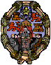

|
En Octubre del 2004 empecé a dar
clases en la Escuela Politécnica Superior de la Universidad Autóma de Madrid, en el Departamento de
Ingeniería Informática, como Profesor asociado.
|
 |
Desde Octubre del 2001 hasta Marzo del 2004 impartí
clases en la Universidad Pontificia de
Salamanca Campus Madrid, en el Departamento de Electrónica y
Comunicaciones (DEC), como Profesor asociado.
|